On the far side of the local dome, near the Broken Crown, an abandoned collapsed dome, lies the Pyroclave, a forgotten promethium cache that no gang currently claims. The tanks are old and the seals are weeping rust, but there is still fuel inside them, and in the underhive fuel is worth fighting over.
The Midnight Theatre know exactly what it is worth, and exactly who would want it. To the Cawdor, promethium is more than fuel. It feeds the braziers of their shrines and the sacred flames that burn away the unclean. So the Delaque let the rumour slip: a whisper in a drinking hole, a careless word overheard at a trading post. An unclaimed cache, out by the Broken Crown, there for the taking.
It reaches The Carrion Psalm, just as the Delaque meant it to. , their Word Keeper, gathers his congregation and leads them out across the dome to claim it in the Emperor's name. In the ruins to the west, the Theatre are already waiting. The cache is the bait. The Psalm are the prey.
Setup
At stake
Unclaimed promethium cache
Battlefield effect
Improve Blaze (X) effects by one
Challenger
The Carrion Psalm
Table
2' × 2' - Deployment on board edges
Deployment
Sniping Range: the winner of a roll-off picks a battlefield edge and their opponent takes the opposite one. Each gang deploys between its own edge and a line 12" from the centre line. On a 2' table that leaves just the edges, 24" apart.
Objective
King of the Hive: one objective sits at the centre of the battlefield. In the Check for Victory step of each End phase it scores 1 VP for the gang controlling it, and the first gang to 3 VP wins. If only one gang still has models on the battlefield, they win; if neither does, it is a draw.
Psalm side quest
Protect the Future: once both crews are deployed, one of your Prospects is picked at random (or a Ganger if there are none). If they are still on the battlefield when the battle ends, the side job is done.
Theatre side quest
Crippling Strike: if, in the Check for Victory step of any End phase, at least half of the enemy models on the battlefield are Seriously Injured or Engaged, the side job is done.
Crews
Strike Force: Both gangs use Custom (5) Psalm: 6 fighters, 775 rating, including Ratsong as an extra Bonepicker from Without Number Theatre: 5 fighters, 780 rating
The Carrion Psalm approach from the east, through the ruined factory buildings and past an old promethium tank. expects snipers covering the approach, but finds the ruined tower empty.
The Midnight Theatre lie in wait in the shadows of the old Gothic ruins to the west of the fuel cache. 's not there. He's already slipped into the dark, flanking the Cawdor as they near, ready to strike From the Shadows.
1
Round 1: The trap is sprung
The silence is broken by the whir of plasma coils charging.
Seeing the glow behind a barricade directly ahead, moves off to the left to stay out of the line of fire. He leaves to deal with the threat. takes the lead, advancing on the platform as the most likely location for the cache. He takes with him: he'll know the good promethium cylinders when he sees them.
is tasked with guiding the gang's newest prospect, , and they move through the ruins to investigate the cargo containers.
Meanwhile glances to next to him and silently curses as he misjudges his shot and overcharges the plasma gun. He ducks back behind the barricade, cycling the coolant through the coils.
and move through the ruins to get into position.
Rumpleteaser - Plasma GunRumpleteaser suppressed, Out of Ammo
To Hit (4+)Unstable!
To Wound (3+)Suppressed
Ammo (6+)Out of Ammo
Note: Rumpleteaser uses Hip-shooting to rush to the barricade and fire on Mordecai.
Positions at the end of round 1
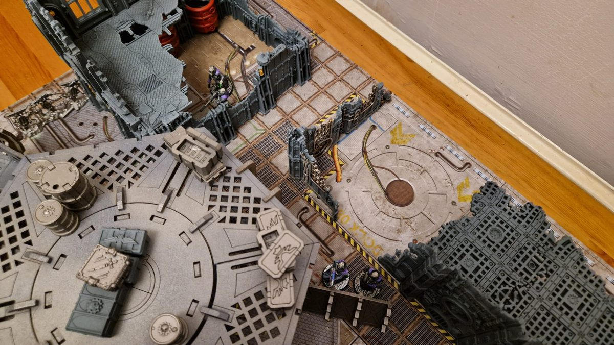
The Midnight Theatre lay the trap…
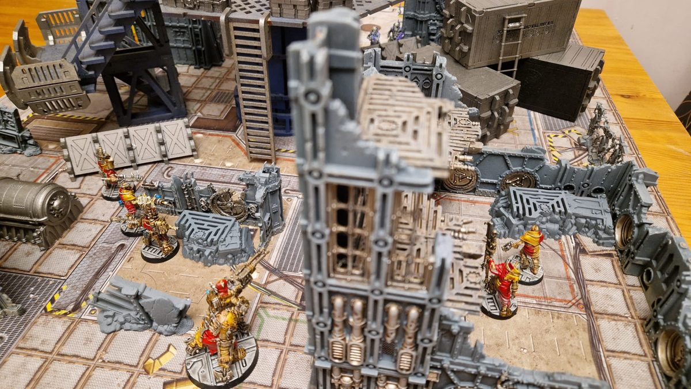
…and the Carrion Psalm are drawn in like rats.
SSuppressed
AOut of ammo
End phase: nobody reached the Cache, so no VP. Score 0–0.
2
Round 2: Closing in
stays out of sight, working his way round behind the Cawdor lines.
swings Amen round to face the barricade and opens up with the twin-linked stubber.
Deus and Amen - Twin-linked Heavy StubberMiss, Out of Ammo
To Hit (4+)Miss, Out of Ammo
Note: Bulging Biceps to move at Initiative and fire a heavy weapon. Twin-link allowed a re-roll of the Rapid Fire dice.
The rounds rattle off the barricade without finding a Delaque until the stubber jams.
When 's gun stops firing, leans out from the barricade to cover while he gets his plasma gun working again.
Jellylorum - LasgunSaved
To Hit (4+)Hits
To Wound (5+)Wounds
Save (6+ +1 cover)Saved
Note: Juggernaut prevents suppression.
The las-bolt hits square in the chest, but the Stig-Shambler barely notices.
On the right flank, and push forward between the containers.
On the far side, climbs into the Gothic ruin to find a sniper's perch. spots him against the stonework and fires his autopistol.
Ezekiel - AutopistolDemeter takes a wound and is suppressed
To Hit (3+)Two hits
To Wound (4+)Two wounds
Save (5+ +2 cover)Takes a wound and is suppressed
ducks back behind the rubble, wounded. and reach the foot of the near ladder, ready to climb up and claim the Cache.
On the opposite side, reaches the foot of the other ladder. Both gangs are now one climb away from the prize.
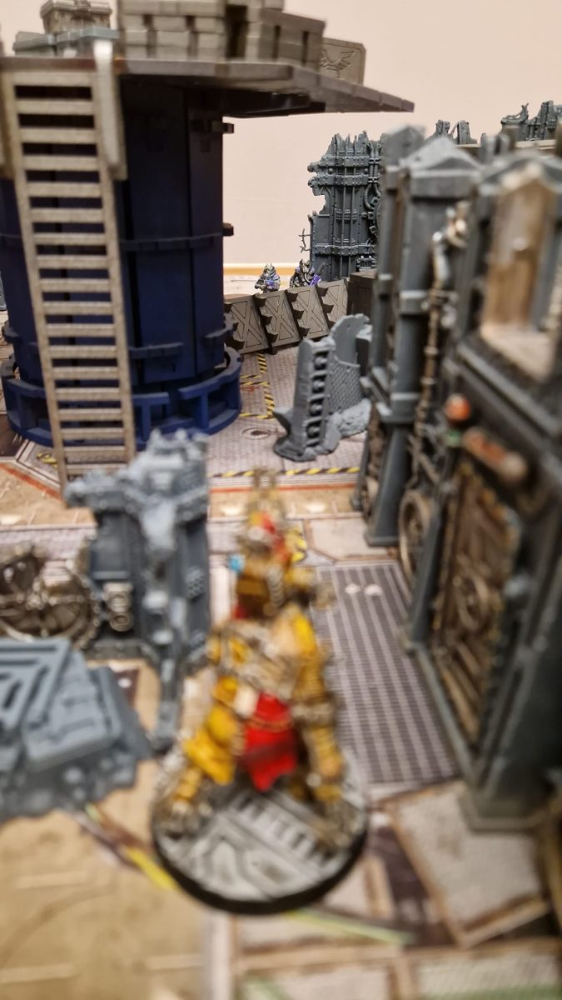
Deus empties his twin heavy stubbers.
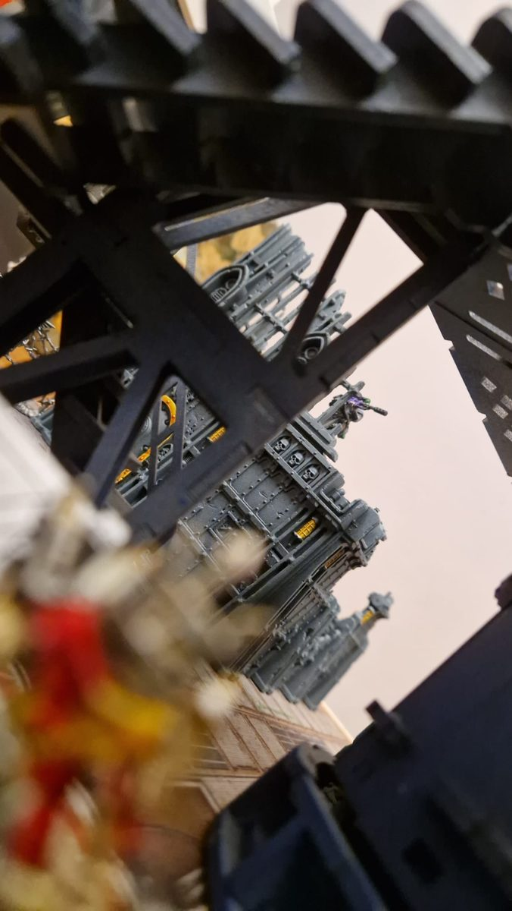
Ezekiel spots the Delaque sniper.
Positions at the end of round 2
AOut of ammo
WWounded
SSuppressed
End phase: nobody reached the Cache, so no VP. Score 0–0.
3
Round 3: From the shadows
With every Cawdor eye on the platform, finally shows himself, stepping out of the shadows behind the Psalm's line.
clears the jam and turns the stubber back on the barricade.
Deus and Amen - Twin-linked Heavy StubberRumpleteaser seriously injured
To Hit (4+)Three hits
To Wound (3+)Three wounds
Save (6+ +1 cover AP -1)Takes a wound
Injury rollSerious Injury
Note: Used Hidden Stash for a free reload action. Bulging Biceps to move at Initiative and fire a heavy weapon. Twin-linked to re-roll the Rapid Fire dice.
This time the burst finds , and he slumps against the barricade. , right beside him, holds his nerve.
Jellylorum - Nerve CheckHolds
Cool 6Passes
Rules note: I got this wrong. Nerve tests should only be taken when a friendly fighter is taken Out of Action, not Seriously Injured, so this test should not have happened.
goes for the nearest Cawdor, but it's further than it looked from the shadows, and the charge falls short. He's left standing among the Psalm with nowhere to hide.
Macavity - Charge1" short
Target (4+)1" short
Note: Used the Thunderous Charge tactic to roll 2D6 and pick one.
is still pinned in the ruin and can't help him. turns and charges the Nacht-Ghul, cleaver raised.
Ezekiel Crows - ChargeMacavity injured
Initiative 3 +2 charge bonus
Autopistol
To Hit (3+)Hits
To Wound (4+)Wounds
Save (5+)Causes one wound
Cleaver
To Hit (3+)Three hits and Knockback
To Wound (3+)Three wounds
Save (5+ AP -1)Two wounds caused
InjuryInjured
Note: Bull Charge for +1 Strength and Knockback (6+) on the charge. Lethality 2 hits.
Macavity - Serpent's FangsEzekiel takes a wound
Initiative 5
Serpent's Fangs
To Hit (3+)Hits
To Wound (3+ Toxin)Wounds
Save (5+ AP -3)Causes one wound
Both of them draw blood. sees his chance to finish off and charges in with his chainglaive.
Macavity - Serpent's FangsMordecai takes a wound
Initiative 5
Serpent's Fangs
To Hit (3+)Hits
To Wound (3+ Toxin)Wounds
Save (5+ +1 Parry AP -3)Causes one wound
Mordecai - ChainglaiveFails to wound
Initiative 1 +2 charge bonus
To Hit (3+)Two hits and Knockback
To Wound (3+)Fails to wound
Note: Unwieldy strikes at Initiative 1.
is too quick for him. He twists away from the glaive and cuts in return. Back at the barricade, drags back to his feet.
Rumpleteaser - RecoveryRecovers
RecoveryRecovers
Note: +1 die from the Tend Wounds action, +1 die from Jellylorum assisting.
leaves behind the containers and climbs onto their roof. From up there he can see at the foot of the far ladder, and he opens fire.
Gutter Cantor - Polearm/AutogunDeuteronomy suppressed
To Hit (4+)Hits
To Wound (4+)Suppressed
turns his lasgun on , but the Stig-Shambler shrugs off the hit.
Jellylorum - LasgunFails to wound
To Hit (4+)Hits
To Wound (5+)Fails to wound
Note: Juggernaut prevents suppression.
climbs the ladder anyway and stands at the edge of the platform. He reaches into the Warp to wrap himself in a Perfect Void, but the Warp bites back and he staggers.
Deuteronomy - Perfect VoidManifested and suppressed
Willpower 9Manifests with Perils
PerilsWarp Surge! Suffers a S4 AP -2 L1 hit
To Wound (3+)Suppressed
Rules note: I got this wrong. Deuteronomy should have taken a Maintain (Single) action for the Continuous Effect to persist after his activation.
On the other ladder, reaches the top, levels his flamer across the platform at and opens fire.
Vermin Pyre - Flamer/PolearmDeuteronomy takes a wound, Out of Ammo
To Wound (3+)Hit
Save (5+ +2 cover)One wound caused
Ammo (6+)Out of Ammo
Note: Blaze (4+) causes an extra hit. +2 cover from Perfect Void.
The flames catch and Vermin's tank runs dry. From the Gothic ruin, finally gets a clear shot at the wounded .
Demeter - Long RifleEzekiel suppressed
To Hit (3+)Hits
To Wound (3+)Suppressed
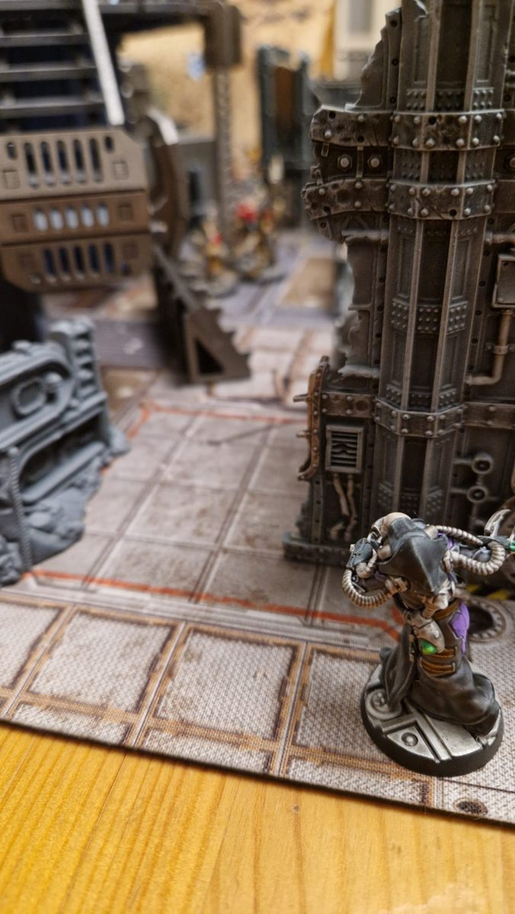
Macavity emerges from the shadows.
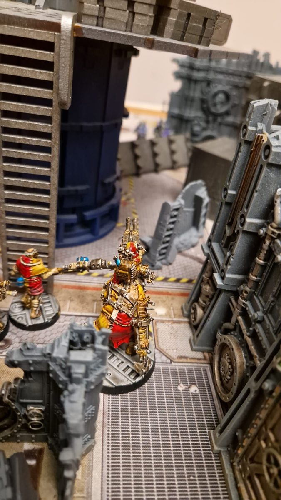
Deus takes down Rumpleteaser.
The fight at the barricade
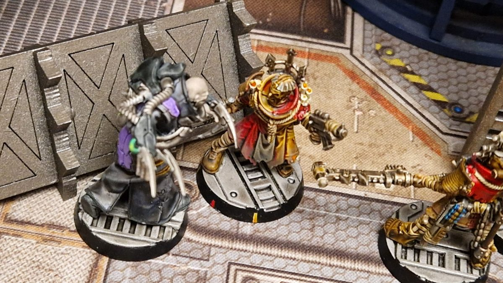
Macavity and Ezekiel Crows in combat.
Positions at the end of round 3
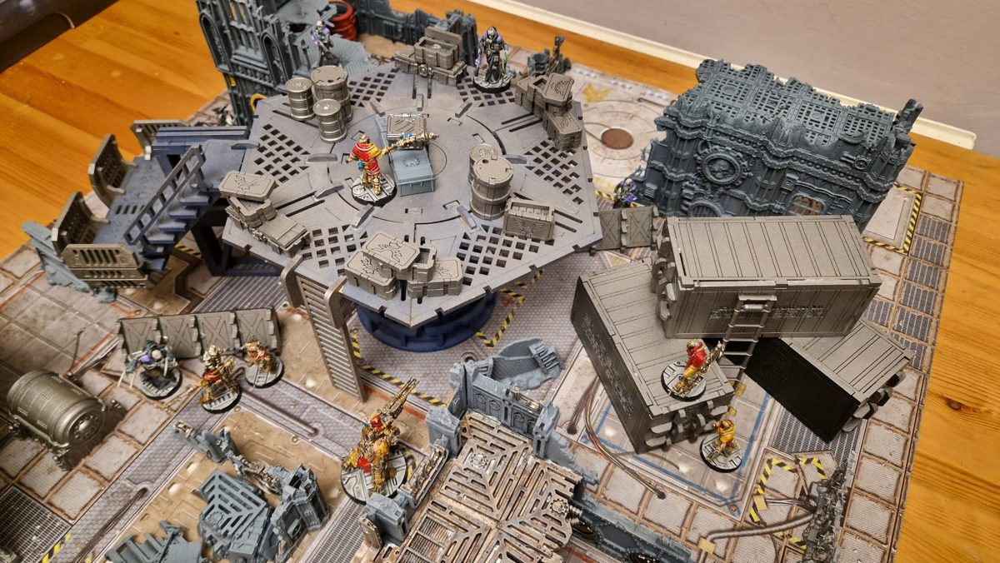
The whole table at the end of round 3.
WWounded
SSuppressed
AOut of ammo
IInjured, 0 wounds
VPerfect Void
End phase: the Psalm scored 1 VP at the Cache. Score 1–0 to the Psalm.
4
Round 4: First blood
doesn't wait for the Psalm to regroup. He turns from and goes for , who is already bleeding from their last exchange.
Macavity - Serpent's FangsMordecai out of action
Initiative 5 +2 charge bonus
Serpent's Fangs
To Hit (3+)Four hits
To Wound (3+ Toxin)Two wounds
Save (5+ +1 Parry AP -3)Two wounds caused
InjuryOut of Action
Note: Mordecai suffers the Personal Enmity lasting injury.
The fangs find their mark and the Word Keeper goes down. Losing their leader shakes the Psalm, but , wounded beside him, holds his ground.
Ezekiel Crows - Nerve CheckHolds
Cool 7Passes
wants revenge. He drags Amen round towards the Nacht-Ghul and fires the stubber.
Deus and Amen - Twin-linked Heavy StubberMisses
To Hit (4+)Misses
Note: Uses Bulging Biceps to move at Initiative and fire a heavy weapon.
Up in the Gothic ruin, takes careful aim at .
Demeter - Long RifleEzekiel seriously injured
To Hit (3+ +1 aim)Hits
To Wound (3+)Wounds
Save (5+ +1 cover AP -1)Causes one wound
InjurySeriously Injured
goes down. On the platform, slams a fresh canister into his flamer and turns it on again.
Vermin Pyre - Flamer/PolearmDeuteronomy takes a wound and is suppressed
To Wound (3+)Wounds
Save (5+ +2 cover AP -1)Causes one wound and Suppressed
Note: Blaze (4+) causes an extra hit. +2 cover from Perfect Void.
Burnt and pinned at the edge of the platform, tries to keep hold of the Perfect Void.
Deuteronomy - Maintain PowerDeuteronomy takes a wound, is injured and suppressed
Willpower 9Maintains, but suffers Perils of the Warp
PerilsWarp Surge! Suffers a S4 AP -2 L1 hit
To Wound (3+)Wounds
Save (5+ AP -2)One wound caused
InjuryInjured
The Warp hits him again and he drops to his knees, but he still raises his flechette pistol and fires back at .
Deuteronomy - Flechette PistolVermin Pyre out of action
To Hit (3+)Three hits
To Wound (3+ Toxin)Three wounds
Save (6+)Takes three wounds
InjuryOut of Action
Note: Vermin Pyre suffers the Hobbled lasting injury.
The poison does its work and Vermin Pyre falls from the platform. Below it, crawls into cover and gets himself back up.
Ezekiel Crows - RecoveryRecovers
RecoveryRecovers
Note: +1 die from the Tend Wounds action.
is back in the fight. With busy with , he fires his plasma gun at the Stig-Shambler.
Rumpleteaser - Plasma GunDeus and Amen take two wounds and are suppressed, weapon jammed
To Hit (4+)One hit
Ammo (6+)Weapon jammed
To Wound (3+)Wounds
Save (6+ +1 cover AP -2)Causes two wounds and Suppressed
The bolt hits hard, but the heat of the shot has warped the coils out of alignment. The plasma gun can no longer hold a charge. creeps to the edge of the container roof and fires down at .
Gutter Cantor - Polearm/AutogunMisses
To Hit (4+)Misses
fires back from the barricade, forcing flat against the roof.
Jellylorum - LasgunGutter Cantor suppressed
To Hit (4+)Hits
To Wound (4+)Suppressed
darts between the containers to take a shot at , but his stub gun doesn't have the range.
Ratsong - Stub GunMisses
To Hit (5+)Misses
The fight at the barricade
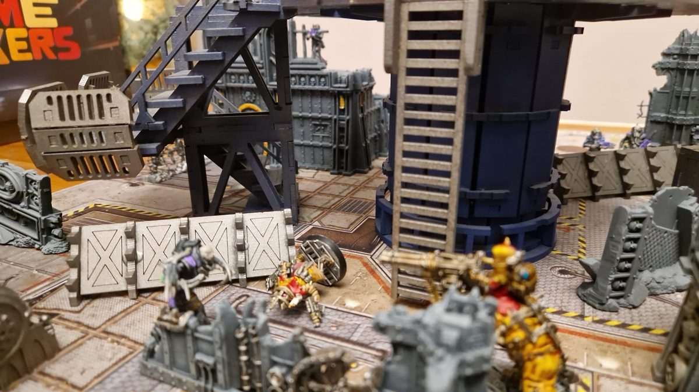
Mordecai falls to Macavity.
Positions at the end of round 4
IInjured, 0 wounds
SSuppressed
W2Wounded, number shows wounds taken
WWounded
JGun jammed
💀Out of Action
VPerfect Void
End phase: the Psalm pass their bottle test and no VP is scored. Score 1–0 to the Psalm.
The Carrion Psalm - Bottle CheckThe Psalm hold
Mordecai (Leadership 8)Passes
5
Round 5: An eye for an eye
is wounded and right next to . Deus drives Amen into him, swinging the great club.
Deus and Amen - Engage DistanceEngaged
Engage (4+)Engaged
Macavity - Serpent's FangsMiss
Initiative 5
Serpent's Fangs
To Hit (3+)Miss
Deus and Amen - Heavy ClubMacavity seriously injured
Initiative 1
Heavy Club
To Hit (4+)Two hits
To Wound (2+)Two wounds
Save (5+)Two wounds
InjurySeriously Injured
Note: Unwieldy, so Initiative 1. No charge bonus to Initiative or attacks. Lethality 2 weapon.
The club smashes to the ground. sees heading for the fallen Nacht-Ghul and fires to stop him.
Demeter - Long RifleEzekiel suppressed
To Hit (2+)Hits
To Wound (3+)Suppressed
keeps coming anyway. He reaches and brings his cleaver down.
Ezekiel Crows - Coup de GraceMacavity out of action
Ezekiel (Str 3)
Macavity (Str 4)Macavity out of action
Note: Macavity receives the Lesson Learnt lasting injury.
empties his autogun at , forcing him down, but runs out of ammunition.
Gutter Cantor - Polearm/AutogunDemeter suppressed, Out of Ammo
To Hit (4+)Hits, Out of Ammo
To Wound (4+)Wounds
Save (5+)Saved, Suppressed
fires back at , then heads for the foot of the ladder.
Jellylorum - LasgunGutter Cantor suppressed
To Hit (4+)Hits
To Wound (4+)Suppresses
With his plasma gun useless, falls back into the shadows.
makes his way back towards the platform ladder.
gathers what strength he has left and walks to the centre of the platform. He stands over the Cache, and for now it's his.
The end of Macavity
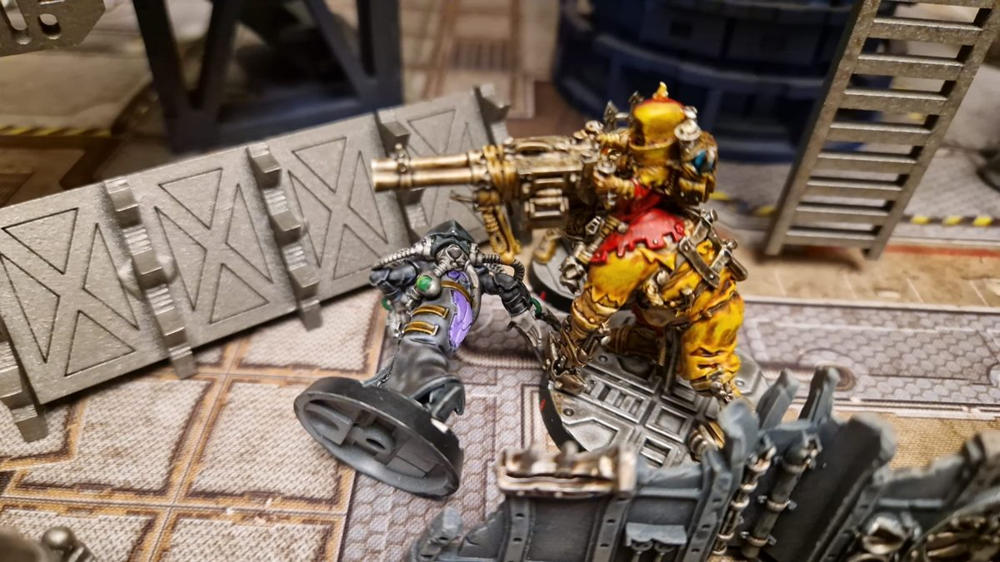
Macavity goes down.
Positions at the end of round 5
IInjured, 0 wounds
SSuppressed
AOut of ammo
W2Wounded, number shows wounds taken
WWounded
JGun jammed
💀Out of Action
End phase: the Theatre scored 1 VP at the Cache. Score 1–1.
The Midnight Theatre - Bottle CheckThe Theatre hold
Deuteronomy (Leadership 8)Passes
6
Round 6: King of the platform
move up and fire at 's position in the ruin.
Deus and Amen - Twin-linked Heavy StubberMiss
To Hit (4+)Miss
Note: Bulging Biceps to move at Initiative and fire a heavy weapon.
fires back at , but the shot only glances off Amen.
Demeter - Long RifleFails to wound
To Hit (3+)Hits
To Wound (5+)Fails to wound
Note: Juggernaut prevents becoming suppressed.
limps to the foot of the ladder, with standing at the top.
climbs up to his leader and patches up his worst wound so can stand again.
reloads his autogun.
stays in the shadows, his plasma gun still unable to hold a charge.
reaches the bottom of the ladder and takes a hopeful shot at .
Ratsong - Stub GunMisses
To Hit (5+)Misses
Positions at the end of round 6
IInjured, 0 wounds
W2Wounded, number shows wounds taken
WWounded
JGun jammed
End phase: the Theatre scored 1 VP at the Cache. Score 2–1 to the Theatre.
7
Round 7: Out of time
has had enough of on the container roof and takes careful aim.
Demeter - Long RifleGutter Cantor injured and suppressed
To Hit (2+)Hits
To Wound (3+)Wounds
Save (6+)Takes one wound
InjuryInjured and Suppressed
fire back at , but miss again.
Deus and Amen - Twin-linked Heavy StubberMiss
To Hit (4+)Miss
moves to fire on as well.
Jellylorum - LasgunMiss
To Hit (4+)Miss
climbs to the top of the ladder and fires at the Delaque on the platform.
Ezekiel - AutopistolMiss
To Hit (3+)Miss
barely looks at him. He raises his flechette pistol and fires back.
Deuteronomy - Flechette PistolEzekiel suppressed
To Hit (3+)One hit
To Wound (3+ Toxin)Suppressed
Wounded on the container roof, fires one last burst at .
Gutter Cantor - Polearm/AutogunDemeter suppressed
To Hit (4+)Hits
To Wound (4+)Suppressed
stays in the shadows. The Theatre already have what they came for.
waits at the bottom of the ladder, unable to get past at the top. Up on the platform, The Midnight Theatre still hold the Cache, and the Psalm have run out of time.
Positions at the end of round 7
IInjured, 0 wounds
SSuppressed
W2Wounded, number shows wounds taken
WWounded
JGun jammed
End phase: the Theatre scored 1 VP at the Cache. Final score 3–1 to the Theatre.
Aftermath
The Midnight Theatre take the promethium cache
When the shooting stops, is still standing over the Cache, and the Pyroclave belongs to the Theatre. The Psalm carry their wounded back east. survives 's fangs, but he comes away with a burning hatred for the Nacht-Ghul. is left Hobbled by his fall from the platform. Macavity was cut down by 's cleaver, but he recovers and is wiser for it. The Psalm leave convinced that the promethium should have been theirs.
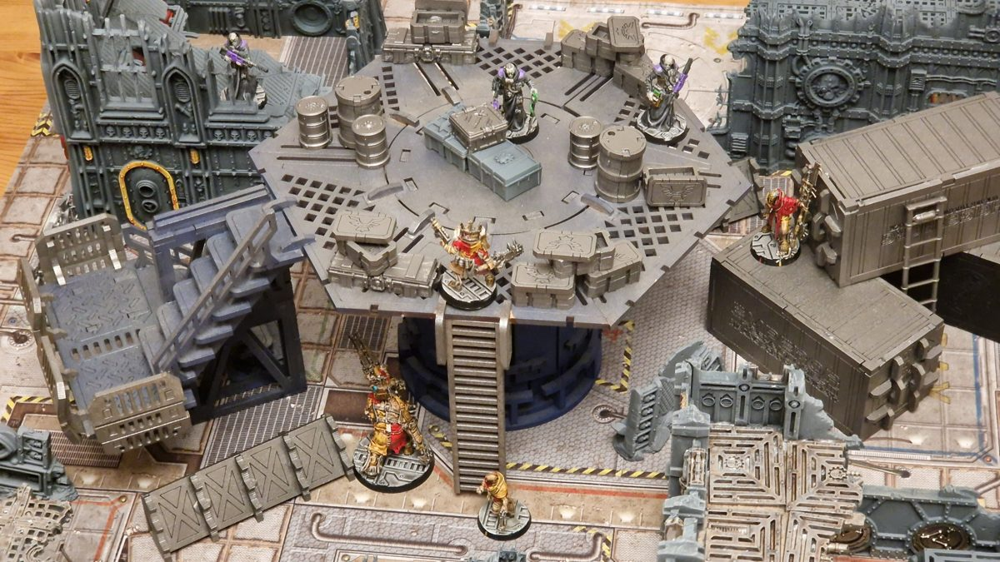
The end of the battle, with Deuteronomy holding the Cache.
Gang
Territory
Side quest
Lasting injuries
Credits
Reputation
The Midnight Theatre
Promethium Cache
Crippling Strike: failed
Macavity: Lesson Learnt, 2 XP
+40
+1
The Carrion Psalm
–
Protect the Future: completed
Mordecai: Personal Enmity, hatred for the Nacht-Ghul Vermin Pyre: Hobbled
+20
–
Experience
The Midnight Theatre
Fighter
Earned from
XP
Macavity
Participation +1, Mordecai Out of Action +3, Lesson Learnt +2
+6
Deuteronomy
Participation +1, Vermin Pyre Out of Action +2, Objective +1